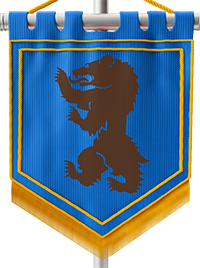

Perícias e Profissões
Perícias
Perícias indicam a capacidade de um personagem para realizar certos feitos. Cada personagem escolhe 4 perícias das listadas a seguir:
Acrobacia (Des) - A capacidade de realizar piruetas e se safar de perigos de forma sagaz.
Atletismo (For) - A capacidade de levantar objetos, escalar, correr e nadar.
Brutalidade (For) - A capacidade de destruir objetos.
Enganação (Inf) - A capacidade de mentir ou esconder informações.
Exaustão (Vig) - A capacidade de resistir a exaustão.
Furtividade (Des) - A capacidade de se esconder e cometer atos sem ser percebido.
História (Con) - A capacidade de lembrar de eventos, pessoas e criaturas históricas.
Intimidação(Inf) - A capacidade de intimidar e coagir uma criatura.
Intuição (Inf) - A capacidade de interpretar as intenções reais de uma pessoa.
Investigação (Con) - A capacidade de juntar pistas e desvendar mistérios.
Natureza (Con) - A capacidade de reconhecer ambientes e criaturas naturais.
Percepção (Con) - A capacidade de reparar em detalhes do ambiente.
Persuasão (Inf) - A capacidade de convencer os outros.
Sobrecarga (Vig) - A capacidade de resistir a sobrecarga.
Profissões
As Profissões indicam o caminho que seu personagem trilha no mundo. Cada personagem pode escolher 1 profissão da qual possui treinamento com suas ferramentas. As profissões são:
| Profissão | Descrição | Treinamento | Bônus | Alquimista | Capaz de criar poções mágicas, poções de cura e ácidos. | Kit de Alquimia | Suas poções são 50% mais valiosas e efetivas. | Artesão | Capaz de criar e consertar adornos e acessórios. | Ferramentas de Artesanato | 50% de valor e desconto quando vende ou compra pedras preciosas. | Ator | Capaz de se disfarçar e imitar outras pessoas. | Kit de Disfarce | Imita de forma idêntica a fala e os maneirismos de uma pessoa que já viu e ouviu. | Caçador | Capaz de extrair materiais de suas presas. | Kit de Extração | Extrai 50% mais materiais. | Cartógrafo | Capaz de criar mapas precisos da localidade. | Kit de Cartografia | Revela o mapa aberto após 10 minutos de análise. | Carpinteiro | Capaz de construir e reparar objetos de madeira. | Ferramentas de Marceneiro | Cria 2 vezes mais flechas. | Charlatão | Capaz de arrombar cadeados e fechaduras, forjar falsificações de documentos ou pinturas. | Kit de Falsificação, e Ferramentas de Ladrão | Quando negocia você consegue 25% de desconto ou valor. | Coureiro | Capaz de criar e consertar vestes e armaduras. | Ferramentas de Coureiro | 50% de valor e desconto quando vende ou compra couro. | Coveiro | Capaz de realizar ritos fúnebres e evitar mortos-vivos. | Ferramentas de Coveiro | Mortos enterrados não ressurgem como mortos-vivos. | Cozinheiro | Capaz de criar comidas que fortalecem os status. | Kit de Cozinha | Cria uma comida que aumenta em 1 um atributo a sua escolha por 1 hora para quem consumir. | Herbalista | Capaz de encontrar ervas, identificar, extrair e curar venenos e doenças. | Kit de Venenos | Suas poções são 50% mais valiosas e efetivas. | Ferreiro | Capaz de criar e consertar armas e armaduras. | Ferramentas de Ferreiro | 50% de valor e desconto quando vende ou compra metais. | Inventor | Capaz de criar armas de fogo, munições e invenções que auxiliam na exploração e combate. | Ferramentas de Funilaria | Ganha bônus de Treinamento em todas as Ferramentas. | Médico | Capaz de curar ferimentos e estabilizar aliados caídos. | Kit de Primeiros Socorros | Ao utilizar o kit médico em um alvo ferido, o alvo recupera 10 pontos de Saúde fora de combate. | Músico | Capaz de tocar músicas que aumentam os atributos. | Instrumentos Musicais | Toca uma música que aumenta em 1 um atributo a sua escolha por 1 hora para quem ouvir. | Shaman | Capaz de ver fantasmas e realizar rituais. | Baralhos e Dados | Pode ver Fantasmas. | Soldado | Capaz de navegar e controlar veículos. | Equipamento de Navegação, Veículos de ar, terra e água | Utiliza meios de transporte de forma gratuita. Montarias tem um desconto de 50%. |
Todas as profissões têm sua relevância, porém alguns desses profissionais são indispensáveis em um grupo de aventureiros, por exemplo o médico, que pode tratar dos ferimentos do grupo e um caçador, que pode extrair os materiais das criaturas que o grupo encontra.
O uso das ferramentas utilizadas por cada profissão não está limitada apenas a eles, qualquer um pode utilizar as ferramentas que preferir, porém os profissionais sempre serão mais habilidosos e eficientes com suas ferramentas. Discuta com seu grupo na criação de personagens para criar um grupo mais eficiente, ou criem as cegas e se divirtam no caos da campanha.